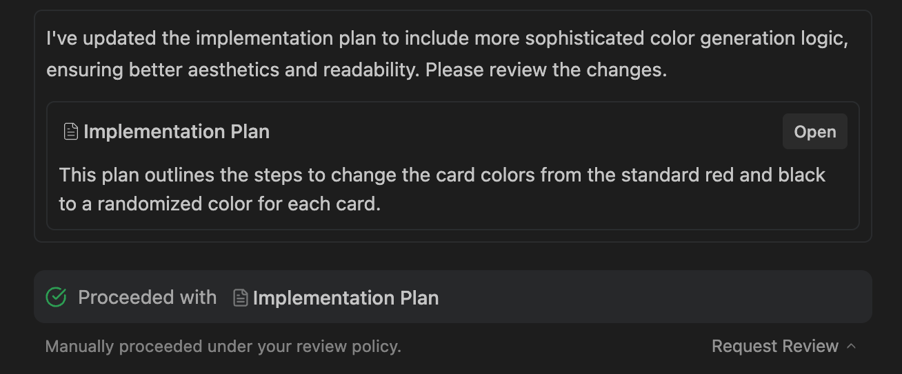
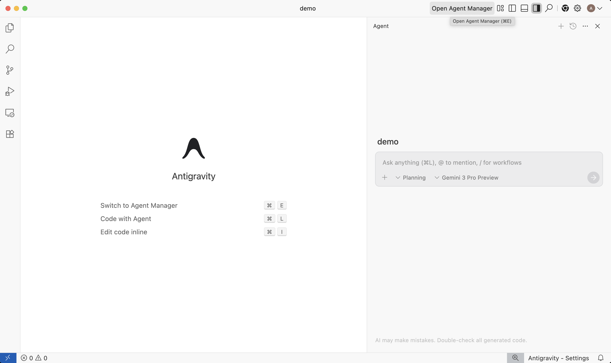

INTERACT 모델 기반으로 프롬프트, 멀티모달 자료, 앱 프로토타입, 피드백 루프를 하나의 수업 설계 흐름으로 묶는 실습형 워크샵
PromptMediaPrototypeFeedback2026-05-02 업데이트 반영
Dr. Jewoong Moon · University of Alabama
Poster / Program Copy
워크숍 안내문은 “콘텐츠 생성”이 아니라 “수업 설계 산출물”을 약속해야 합니다.
AI Studio는 단순한 콘텐츠 생성 도구를 넘어 수업 설계의 매개가 됩니다. 본 워크숍에서는 INTERACT 모델을 기준으로 프롬프트, 멀티모달 자료, 앱 프로토타입을 하나의 수업 설계 흐름으로 묶는 절차를 실습형으로 다룹니다. 참가자는 본인의 교과 주제에 곧바로 적용 가능한 설계안과 산출물 초안을 가지고 돌아갈 수 있습니다.
강의 주요 내용
1AI Studio Build Mode 인터페이스와 핵심 버튼 살펴보기
2INTERACT 모델 기반 프롬프트·산출물 스키마 설계
3Build Mode로 교실용 앱 프로토타입 만들고 검수·공유하기
워크숍 안내 문구 · 2026-05-08 업데이트
Imagegen2 Visual Anchor
오늘의 핵심 흐름을 한 장면으로 보면 설계 → 생성 → 검수 → 공유입니다.
Imagegen2 생성 시각자료: AI Studio를 콘텐츠 공장이 아니라 교수설계 스튜디오로 설명
[ROLE] 당신은 교육미디어 설계자이자 형성평가 튜터입니다.
[CONTEXT] 학습자: [수준/선행지식/오개념], 환경: [기기/시간/수업형태][INTERACTION] 학생은 먼저 예측하고, 조작하고, 결과를 비교한 뒤 설명해야 합니다.
[COGNITION] 정답 제공 전 학생 설명을 요구하고, 오개념별 힌트 ladder를 제공합니다.
[AFFECT] 실패를 비난하지 말고 재시도 가능한 언어와 난이도 조절을 포함합니다.
[OUTPUT] 화면 흐름, 활동 단계, JSON 데이터, 루브릭, 교사용 노트를 분리해 출력합니다.
[TEST] 저선행지식 학생, 대표 오개념, 접근성, 개인정보, 출처 검증 사례를 통과해야 합니다.
워크샵용 prompt contract · INTERACT 요소를 시스템/사용자 지시문으로 변환
Schema-First Design
산출물 구조를 먼저 정하면 재사용이 쉬워집니다.
필드
타입
INTERACT 의미
수업/앱 활용
learner_profile
object
학습자와 선행지식
난이도, 힌트, 예시 수준 결정
interaction_steps
array
행동 활동 순서
화면 단계, 버튼, 입력 UI로 변환
misconception_rules
array
인지·메타인지 점검
오답 피드백, 재시도 질문, 튜터 반응
affective_support
object
동기·정서 지원
격려 문장, 실패 후 다음 행동, 난이도 조절
evidence_log
array
학습 결과 증거
교사용 요약, LMS 제출, 형성평가 루브릭
quality_gates
array
검수 기준
사실성, 접근성, 개인정보, 저작권, 안전성
출처: Gemini API structured output docs + INTERACT prompt engineering 변환
Prompt QA
프롬프트도 테스트를 통과해야 합니다.
테스트
AI Studio에 넣는 검사 질문
통과 기준
Happy path
평균 수준 학습자가 예상대로 예측-조작-설명을 완료하는가?
단계 누락 없음, 피드백이 목표와 연결됨
오개념
대표 오개념 2개를 넣었을 때 바로 정답을 말하지 않는가?
힌트 ladder, 재시도 질문, 비교 활동 제공
저선행지식
초보 학습자에게 용어를 과하게 쓰지 않는가?
쉬운 언어, 예시, 선택 가능한 도움
접근성
이미지·음성·색상 정보에 대체 경로가 있는가?
alt text, 자막/전사, 키보드, 색 대비 포함
개인정보
학생 식별정보나 민감자료 입력을 요구하지 않는가?
최소 데이터, 로컬 저장, 익명화 안내
출처 환각
자료 근거가 없는 사실을 만들어내지 않는가?
모르면 “확인 필요” 표시, URL/인용 직접 검증
워크샵 운영: prompt test harness · 품질 게이트와 연결
Copy-Ready Template
교육미디어 설계 brief: 생성 전에 채우는 8문장
역할: 당신은 교육미디어 설계자입니다.
주제/목표:[학습목표]를 달성하도록 설계합니다.
학습자:[학년/전공/선행지식/예상 오개념]상호작용: 학습자가 예측-조작-비교-수정을 하게 합니다.
자료:[교재/URL/강의안/표준/논문]만 근거로 사용합니다.
피드백: 오개념별 힌트와 재시도 질문을 포함합니다.
평가: 관찰 가능한 형성평가 증거를 남깁니다.
산출물: 활동 흐름, 화면 구성, JSON 데이터, 교사용 노트를 만듭니다.
근거: 기존 덱 7번 슬라이드 + UTK iterative cycle
Motion Demo · Prompt Assembly
좋은 프롬프트는 조각을 순서대로 붙이는 과정입니다.
1. 대상누가 배우는가? 학습자선행지식
2. 활동무엇을 하게 할 것인가? 예측조작설명
3. 피드백AI가 언제 무엇을 말할 것인가? 힌트오개념
대상: 1학년, 선행지식 낮음활동: 예측 → 조작 → 설명피드백: 오개념별 힌트와 재시도
설명 포인트: “앱을 만들어줘”가 아니라 수업 설계 조각을 순서대로 붙여 말합니다.
움직이는 도식: prompt brief assembly · 워크샵 설명용
System Instructions
시스템 지시문은 AI의 “교수자 역할”을 정합니다.
해야 할 것
역할, 대상, 피드백 기준, 금지된 도움, 출력 형식, 검증 절차를 분리해서 씁니다.
예: 정답을 바로 주지 말고 먼저 학습자의 예측을 요구한다.
피해야 할 것
“잘 설명해줘”, “재미있게 만들어줘”처럼 평가 기준 없는 지시문은 결과 품질을 검토하기 어렵습니다.
문제: 재미있지만 목표와 맞지 않는 자료.
워크샵 실습: 같은 학생 질문을 “격려형 튜터”, “소크라테스식 질문자”, “전공 TA” 세 역할에 넣고 반응 차이를 비교합니다.
근거: CAT100 Activity C3 System Instructions Lab
Pattern 1
멀티모달 팩트체크: 스크린샷을 비판적 읽기 자료로 바꾸기
System
당신은 미디어 리터러시 튜터입니다. 소셜미디어 게시물 이미지를 받으면, 사실 주장, 검증 신뢰도, 정서적 설득 장치, 추가 확인이 필요한 부분을 분리해 표로 제시하세요.
학습자 과제
1. 최근 7일 이내 테크/교육 관련 게시물 캡처
2. AI Studio로 주장과 신뢰도 분류
3. 고신뢰 주장 1개와 저신뢰 주장 1개를 원출처로 직접 검증
4. AI가 맞힌 것, 놓친 것, 과장한 것을 100자로 기록
근거: CAT100 Activity C1 Multimodal Fact-Check
Motion Demo · Multimodal Critique
이미지 입력은 “답변 받기”가 아니라 주장 분해 → 검증 질문으로 이어집니다.
스크린샷게시물·차트·광고 image
주장 추출사실 주장과 감정 표현 분리 claims
근거 질문어디서 확인해야 하는가? evidence
학생 판단AI가 놓친 것 기록 critique
이미지에서 사실 주장 3개 표시근거 부족 항목을 노란색으로 표시학생: 원출처 확인 후 100자 반박
설명 포인트: AI의 판단을 최종 답으로 쓰지 않고, 학생 검증 과제를 만드는 중간 도구로 씁니다.
코드와 미리보기React/HTML/CSS/JS 초안, live preview, click-to-edit
→
검수와 수정View diff, 반복 수정, 접근성/보안/출처 확인
Build Mode의 장점은 “완성 앱”이 아니라, 교수자가 상호작용 아이디어를 빠르게 테스트할 수 있다는 점입니다.
출처: Build mode in Google AI Studio docs; 기존 덱 12번
Motion Demo · Build Mode Loop
Build Mode는 생성 한 번이 아니라 미리보기와 검수를 반복하는 루프입니다.
설계 brief목표, 행동, 피드백, 데이터 범위 prompt
파일 생성UI, 상태, 데이터 구조, 서버 로직 code
Live preview클릭하고 오작동을 찾기 preview
수정 요청근거 있는 변경만 반복 diff
preview: 학생 선택 후 피드백 없음request: 오답별 힌트와 재시도 추가check: 모바일, 키보드, 저장 범위 확인
설명 포인트: “만들기”보다 “클릭해서 결함을 찾고 구체적으로 고치기”가 핵심입니다.
움직이는 도식: design brief → generated files → live preview → revision request
Copy-Ready Prompt
Build Mode에 넣을 수 있는 설계 중심 프롬프트
중학교 과학 “물의 순환” 인터랙티브 시뮬레이션을 만드세요.
학습자는 햇빛, 온도, 바람을 조절하고 결과를 예측합니다.
시스템은 증발, 응결, 강수, 집수 변화를 시각화합니다.
각 조작 후 예측과 실제 결과를 비교하게 하세요.
오개념별 피드백, 형성평가 문항, 교사용 요약 화면을 포함하세요.
모든 코드는 한 페이지에서 실행되게 하고, 학생 데이터는 브라우저 localStorage에만 저장하세요.
근거: 기존 덱 14-15번 물의 순환 사례 확장
Prototype Example
교실 퀴즈 앱: “문항 생성”이 아니라 “수정 가능한 구조”가 핵심
요구 기능
문항 1개씩 제시, 선택 즉시 피드백, 설명, 다음 문항, 누적 점수, 최종 점수, 재시작.
교사용 편집성
문항 세트를 코드 상단의 명확한 배열/object로 배치해 교사가 직접 고칠 수 있게 합니다.
근거: Build Mode export/deploy docs + Summer 2026 AI Studio activities
Sidecar Guide · Keep This Next to AI Studio
Google AI Studio 옆에 이 가이드를 켜두고 한 기능씩 테스트합니다.
화면 배치
왼쪽에는 Google AI Studio, 오른쪽에는 이 덱을 둡니다. 슬라이드 1장당 하나의 테스트만 합니다.
Left: aistudio.google.com · Right: this guide
테스트 원칙
“신기한 결과”보다 입력, 프롬프트, 출력, 검수 기록을 남기는 것이 목표입니다.
input → prompt → output → review
금지 입력
학생 이름, 학번, 얼굴, 성적, 상담 기록, 비공개 파일, 실제 API 키는 넣지 않습니다.
완료 기준
각 테스트마다 “수업에 쓸 수 있는가?”가 아니라 “무엇을 고쳐야 하는가?”를 1개 이상 적습니다.
실습 운영 가이드 · Google AI Studio Build Mode / Gemini multimodal docs 기반
Sidecar Guide · 4 Test Cards
멀티모달 테스트는 입력 유형별로 작게 끊어서 진행합니다.
1. Image
수업 이미지, 도표, 실험 장면, 포스터를 업로드하고 핵심 주장·오개념·alt text를 뽑습니다.
5 min
2. Screenshot
웹페이지나 앱 화면을 캡처해 UI 문제, 학습자 행동, 접근성 개선점을 찾습니다.
7 min
3. Table / CSV
작은 데이터 표를 넣고 패턴, 이상치, 학생 질문, 차트 아이디어를 생성합니다.
8 min
4. Audio / Video
가능한 계정에서만 짧은 발표 음성이나 동영상을 넣고 피드백 기준을 테스트합니다.
optional
실패해도 통과: 기능이 계정에서 안 보이면 같은 프롬프트를 텍스트 설명이나 스크린샷으로 대체하고, “대체 경로”를 기록합니다.
실습 운영 가이드 · 이미지/스크린샷/표/오디오 입력 분리
Sidecar Guide · Copy-Ready Prompts
옆에 띄워놓고 그대로 복사해 내 자료만 바꿔 넣습니다.
Image / screenshot
이 자료를 수업 활동으로 쓰려고 합니다. (1) 학생이 먼저 관찰해야 할 것, (2) 오해하기 쉬운 부분, (3) 확인 질문 3개, (4) 접근성용 alt text, (5) 수업 전 검수할 위험을 표로 정리해 주세요.
Chart / table
이 표/차트를 학생에게 보여주기 전에 점검해 주세요. 핵심 패턴, 가능한 잘못된 해석, 학생에게 던질 예측 질문, 반박 질문, 더 나은 시각화 제안을 구분해 주세요.
Audio / presentation
이 발표 음성을 피드백해 주세요. 내용 정확성보다 도입의 명확성, 속도, filler, 핵심 주장, 학생/청중이 놓칠 수 있는 지점을 timestamp 중심으로 정리해 주세요.
Build Mode app idea
위 자료를 바탕으로 학생이 예측하고, 조작하고, 결과를 비교하고, reflection을 남기는 1화면 미니 앱을 설계해 주세요. 화면 구성, 입력, 피드백, 교사용 검수 기준을 분리해 주세요.
실습 운영 가이드 · 바로 복사 가능한 멀티모달 프롬프트
Sidecar Guide · Review Before Use
멀티모달 결과는 “맞아 보임”이 아니라 검수 게이트를 통과해야 합니다.
입력 출처이미지·표·오디오가 내가 사용할 권한이 있는 자료인가?
AI의 과잉해석이미지에 보이지 않는 원인, 의도, 정체성을 AI가 단정하지 않았는가?
수업목표 정렬결과가 예쁘거나 길기만 한 것이 아니라 학생 행동을 실제로 바꾸는가?
접근성alt text, 색 대비, 자막/대체 경로가 준비됐는가?
개인정보얼굴, 이름, 성적, 음성 등 민감정보가 포함되지 않았는가?
교수자 수정그대로 쓰지 않고 최소 1개 이상 교수자가 수정했는가?
실습 운영 가이드 · multimodal output quality gate
AI Studio → Antigravity
AI Studio 안의 agent와 외부 Antigravity를 역할별로 나눠 쓰기
AI Studio Build Mode교수설계 brief → full-stack 앱 초안 → live preview
→
내장 Antigravity Agent다중 파일 맥락, npm, 서버 로직, 실행 검증을 보조
→
GitHub / ZIP저장소 또는 압축파일로 외부 개발환경에 연결
→
외부 AntigravityEditor·Manager Surface에서 테스트, diff, screenshot, 배포 검증
워크샵 메시지: AI Studio는 이제 단순 시제품 생성기가 아니라 agent-assisted 제작실입니다. 외부 Antigravity는 장기 유지보수, 보안 점검, 브라우저 검증, 배포 전 리뷰에 더 적합합니다.
출처: Google AI Studio Build Mode docs; Google Developers Blog Antigravity 소개
Motion Demo · AI Studio to Antigravity
AI Studio 산출물은 “완성품”이 아니라 Antigravity 검증 재료로 넘깁니다.
AI Studio빠른 앱 초안과 live preview prototype
ExportGitHub push 또는 ZIP repo
Antigravity파일 구조, 보안, 접근성 점검 agent
Artifactsdiff, screenshot, test report evidence
Agent plan: 데이터 흐름 먼저 설명Run: 브라우저에서 핵심 경로 테스트Artifact: 변경 근거와 screenshot 제출
설명 포인트: 코드보다 artifact를 보게 하면 비개발자 교수자도 품질 판단을 할 수 있습니다.
움직이는 도식: AI Studio prototype → export → Antigravity verification → artifacts
Actual Screen · Antigravity
Antigravity에서는 결과물보다 검증 artifact를 봅니다.

Agent가 계획과 변경 근거를 artifact로 남기면, 교수자는 코드 대신 검증 증거를 기준으로 판단할 수 있습니다.
수업도구 검증
AI가 “고쳤다”고 말한 것보다, 어떤 계획·diff·screenshot·test report를 남겼는지가 중요합니다.
학생 과제에도 적용
AI 사용 결과물을 제출할 때도 artifact를 함께 내게 하면 과정 평가가 가능합니다.
이미지 출처: Google Developers Blog · Google Antigravity
Optional Follow-Up Tool
Antigravity는 웨비나 안에서 설치하지 않고 후속 검증 도구로 안내합니다.

Antigravity는 AI Studio에서 만든 앱을 저장소 단위로 열어 editor, terminal, browser, artifacts를 함께 검토하는 후속 도구입니다.
Download
https://antigravity.google/download
Windows, macOS, Linux용 public preview 다운로드 경로입니다.
웨비나 안에서 할 것
설치는 생략하고, AI Studio 결과물을 GitHub/ZIP으로 넘긴 뒤 무엇을 검증할지 흐름만 보여줍니다.
후속 실습에서 할 것
API 키 노출, 접근성, 모바일 레이아웃, 브라우저 테스트, screenshot/test artifact를 점검합니다.
공식 링크: antigravity.google/download · Google Developers Blog public preview 안내
Agentic Workflow
Antigravity에서 사용할 만한 6단계 워크플로우
1. ExportAI Studio에서 GitHub push 또는 ZIP 다운로드
2. Explainagent에게 코드 구조와 수업목표 설명 요청
3. SecureSecrets, server-side API calls, student data, permissions 점검
4. Improve접근성, 모바일 반응형, 오류 처리, UI polish
5. Verify브라우저 테스트, screenshot, test report 생성
6. PublishPR, GitHub Pages/Cloud Run, LMS 링크 배포
AI Studio 안에서 빠르게 만든 뒤, 외부 Antigravity에서는 “수정했는가”보다 “검증 증거를 남겼는가”를 중심으로 봅니다.
출처: Google Developers Blog · Editor View, Manager Surface, artifacts, browser/terminal/editor access
Copy-Ready Agent Brief
AI Studio 산출물을 Antigravity에 넘길 때 쓰는 지시문
Goal
이 저장소는 Google AI Studio Build Mode에서 만든 교육용 프로토타입입니다.
Your task
1. 파일 구조와 데이터 흐름을 먼저 설명하세요.
2. 학생 개인정보나 API 키 노출 위험을 점검하세요.
3. 접근성 문제(키보드, 색 대비, alt text, label)를 고치세요.
4. 모바일 화면에서 깨지는 레이아웃을 수정하세요.
5. 브라우저에서 주요 사용자 흐름을 테스트하고 스크린샷을 남기세요.
6. 변경사항을 diff와 test report로 요약하세요.
Do not
실제 학생 데이터, 실제 API 키, 민감한 파일을 생성하거나 커밋하지 마세요.
Qian, Y. (2025). Pedagogical Applications of Generative AI in Higher Education: A Systematic Review of the Field.
생성형 AI의 교수학습 활용을 수업 맥락과 활동 유형으로 분류한 최근 리뷰입니다.
https://doi.org/10.1007/s11528-025-01100-1
Wang, P., Jing, Y., & Shen, S. (2025). A systematic literature review on the application of generative artificial intelligence (GAI) in teaching within higher education: Instructional contexts, process, and strategies.
고등교육 교실 수업 안에서 생성형 AI가 어떤 전공, 도구 유형, 수업전략, SAMR 통합 수준으로 적용되는지 정리합니다.
https://doi.org/10.1016/j.iheduc.2025.100996
An, Y., Yu, J. H., & James, S. (2025). Investigating higher education institutions' guidelines and policies regarding generative AI.
교수·학습·연구·행정에서 AI 사용 가이드라인이 다루는 개인정보, 진실성, 책임성 쟁점을 정리합니다.
Baggia, A., Tratnik, A., & Brezavšček, A. (2026). University teachers' perceptions, attitudes, and practices with generative AI: A systematic literature review with a meta-analytic component.
대학 교원의 생성형 AI 인식, 태도, 실천을 종합해 교수자 지원과 정책 설계의 필요성을 보여줍니다.
Domagk, S., Schwartz, R. N., & Plass, J. L. (2010). Interactivity in multimedia learning: An integrated model.
Computers in Human Behavior, 26(5), 1024-1033. 이 덱의 INTERACT 기반 prompt/design schema의 핵심 이론 근거입니다.
https://doi.org/10.1016/j.chb.2010.03.003
Mayer, R. E. (2021). Multimedia learning (3rd ed.). Cambridge University Press.
스토리보드, 이미지·내레이션·대체텍스트 검토, 불필요한 인지부하 감소 설명의 배경 문헌입니다.
https://doi.org/10.1017/9781316941355
Moon, J. (2026). Google AI Studio educational-media workshop materials.
UTK_PD_Faculty_Worksheet_v2, CAT100/AIL606/CAT531 Summer 2026 AI Studio activity plans, and the April 28 Google AI Studio educational-media deck. Unpublished instructional materials.
Local instructional source packet, checked 2026-05-02
주의: 참고문헌은 “기능 최신성”과 “교육 설계 근거”를 분리해서 읽습니다.
Google 문서는 도구 기능과 제약을, 교육학 문헌은 상호작용·멀티미디어 설계 원리를 뒷받침합니다.
Slides updated with source audit on 2026-05-02
학술 문헌 + 내부 수업 설계 자료 · 확인일 2026-05-02
Closing
프롬프트는 교육미디어의 설계 언어입니다.
AI Studio를 잘 쓰는 능력은 더 그럴듯한 문장을 만드는 능력이 아니라, 학습자의 행동, 인지, 피드백, 평가를 구조화하는 능력입니다.
Design firstGenerate secondVerify alwaysIterate with evidence
Inha University Workshop · Google AI Studio for Educational Media